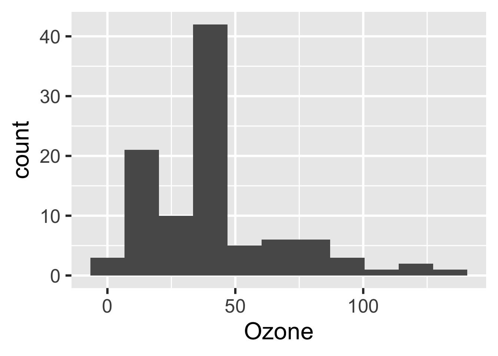

Chapter 2 Walkthrough
This chapter walks through a minimal example of a targets-powered data analysis project. The source code is here, and other examples are linked from the documentation website.
2.1 Goal of the analysis
The this minimal workflow is to assess the relationship among ozone, wind, and temperature in base R’s airquality dataset. We get the data from a file, preprocess it, visualize it, fit a regression model, and generate an R Markdown report to communicate the results.
2.2 File structure
The file structure of the project looks like this.
├── _targets.R
├── R/
├──── functions.R
├── data/
└──── raw_data.csvraw_data.csv contains the data we want to analyze.
Ozone,Solar.R,Wind,Temp,Month,Day
36,118,8.0,72,5,2
12,149,12.6,74,5,3
...functions.R contains our custom user-defined functions. (See the best practices chapter for a discussion of function-oriented workflows.)
# functions.R
create_plot <- function(data) {
ggplot(data) +
geom_histogram(aes(x = Ozone)) +
theme_gray(24)
}Both raw_data.csv and functions.R are custom components. You as the user decide whether to use them, what to name them, and where to put them. However, the “target script” _targets.R file is special. (So special, in fact, that there is a special tar_script() function to help you create one). Every targets project requires a _targets.R script in the project’s root directory to declare and configure the pipeline. Ours looks like this.
library(targets)
source("R/functions.R")
options(tidyverse.quiet = TRUE)
tar_option_set(packages = c("biglm", "rmarkdown", "tidyverse"))
tar_pipeline(
tar_target(
raw_data_file,
"data/raw_data.csv",
format = "file"
),
tar_target(
raw_data,
read_csv(raw_data_file, col_types = cols())
),
tar_target(
data,
raw_data %>%
mutate(Ozone = replace_na(Ozone, mean(Ozone, na.rm = TRUE)))
),
tar_target(hist, create_plot(data)),
tar_target(fit, biglm(Ozone ~ Wind + Temp, data))
)All _targets.R scripts have these requirements.
- Load the
targetspackage itself. (_targets.Rscripts created withtar_script()automatically insert alibrary(targets)line at the top by default.) - Load your custom functions and global objects into the R session. In our case, our only such object is the
create_plot()function, and we load it into the session by callingsource("R/functions.R"). - Call
tar_option_set()to set the default settings for all you targets, such as the names of required packages and the data storage format. Individual targets can override these settings. - Define individual targets with the
tar_target()function. Each target is an intermediate step of the workflow. At minimum, a target must have a name and an R expression. This expression runs when the pipeline builds the target, and the return value is saved as a file in the_targets/objects/folder. The only targets not stored in_/targets/objects/are dynamic files such asraw_data_file. Here,format = "file"makesraw_data_filea dynamic file. That meanstargetswatches the data at the file paths returned from the expression (in this case,"data/raw_data.csv"). - Gather the targets in a pipeline with the
tar_pipeline()function.tar_pipeline()is flexible: it can accept individualtar_target()objects or nested lists of such objects. Every_targets.Rscript must end with atar_pipeline()object, which usually means there is an explicit call totar_pipeline()at the very bottom.
2.3 Inspect the pipeline
Before you run the pipeline for real, you should always inspect the manifest and the graph for errors. tar_manifest() shows you a data frame information about the targets, and it has functionality to specify the targets and columns returned.
tar_manifest(fields = "command")
#> # A tibble: 5 x 2
#> name command
#> <chr> <chr>
#> 1 raw_data "read_csv(raw_data_file, col_types = cols())"
#> 2 fit "biglm(Ozone ~ Wind + Temp, data)"
#> 3 hist "create_plot(data)"
#> 4 raw_data_fi… "\"data/raw_data.csv\""
#> 5 data "raw_data %>% mutate(Ozone = replace_na(Ozone, mean(Ozone, \\n …There are also graphical displays with tar_glimpse()
tar_glimpse()and tar_visnetwork().
tar_visnetwork()Both graphing functions above visualize the underlying directed acyclic graph (DAG) and tell you how targets are connected. This DAG is indifferent to the order you write targets in tar_pipeline(). You will still get the same graph even if you rearrange them. This is because targets uses static code analysis to detect the dependencies of each target, and this process does not depend on target order. For details, visit the dependency detection section of the best practices guide.
2.4 Run the pipeline
tar_make() runs the workflow. It creates a fresh clean external R process, reads _targets.R to learn about the pipeline, runs the correct targets in the correct order given by the graph, and saves the necessary data to the _targets/ data store.
tar_make()
#> ● run target raw_data_file
#> ● run target raw_data
#> ● run target data
#> ● run target fit
#> ● run target histThe next time you run tar_make(), targets skips everything that is already up to date, which saves a lot of time in large projects with long runtimes.
tar_make()
#> ✔ skip target raw_data_file
#> ✔ skip target raw_data
#> ✔ skip target data
#> ✔ skip target fit
#> ✔ skip target hist
#> ✔ Already up to date.You can use tar_visnetwork() and tar_outdated() to check ahead of time which targets are up to date.
tar_visnetwork()tar_outdated()
#> character(0)2.5 Changes
The targets package notices when you make changes to your workflow, and tar_make() only runs the targets that need to build. There are custom rules called “cues” that targets uses to decide whether a target needs to rerun. For the full details on cues, read the “Details” section of the tar_cue() help file. (Enter ?targets::tar_cue into your R console.)
2.5.1 Change code
If you change one of your functions, the targets that depend on it will no longer be up to date, and tar_make() will rebuild them. For example, let’s set the number of bins in our histogram.
# Edit functions.R.
create_plot <- function(data) {
ggplot(data) +
geom_histogram(aes(x = Ozone), bins = 10) + # Set number of bins.
theme_gray(24)
}targets detects the change. hist is outdated (as would be any targets downstream of hist) and the others are still up to date.
tar_visnetwork()tar_outdated()
#> [1] "hist"That means tar_make() reruns hist and nothing else.
tar_make()
#> ✔ skip target raw_data_file
#> ✔ skip target raw_data
#> ✔ skip target data
#> ✔ skip target fit
#> ● run target histWe would see similar behavior if we changed the R expressions in any tar_target() calls in _targets.R.
2.5.2 Change data
If we change the data file raw_data.csv, targets notices the change. This is because raw_data_file is a dynamic file (i.e. tar_target(format = "file")) that returned "raw_data.csv". Let’s try it out. Below, let’s use only the first 100 rows of the airquality dataset.
write_csv(head(airquality, n = 100), "data/raw_data.csv")Sure enough, raw_data_file and everything downstream is out of date, so all our targets are outdated.
tar_visnetwork()tar_outdated()
#> [1] "raw_data" "fit" "hist" "raw_data_file"
#> [5] "data"tar_make()
#> ● run target raw_data_file
#> ● run target raw_data
#> ● run target data
#> ● run target fit
#> ● run target hist2.6 Read your data
targets has a convenient functions tar_read() to read your data from the _targets/ data store.
tar_read(hist)
There is also a tar_load() function, which supports tidyselect verbs like starts_with()
tar_load(starts_with("fit"))
library(biglm)
#> Loading required package: DBI
fit
#> Large data regression model: biglm(Ozone ~ Wind + Temp, data)
#> Sample size = 100The purpose of tar_read() and tar_load() is to make exploratory data analysis easy and convenient. Use these functions to verify the correctness of the output from the pipeline and come up with ideas for new targets if needed.
2.7 Read metadata
To read the build progress of your targets while tar_make() is running, you can open a new R session and run tar_progress(). It reads the spreadsheet in _targets/meta/progress and tells you which targets are running, built, errored, or cancelled.
tar_progress()
#> # A tibble: 5 x 2
#> name progress
#> <chr> <chr>
#> 1 raw_data_file built
#> 2 raw_data built
#> 3 data built
#> 4 fit built
#> 5 hist builtLikewise, the tar_meta() function reads _targets/meta/meta and tells you high-level information about the target’s settings, data, and results. The warnings, error, and traceback columns give you diagnostic information about targets with problems.
tar_meta()
#> # A tibble: 6 x 16
#> name type data command depend seed path bytes time format iteration
#> <chr> <chr> <chr> <chr> <chr> <int> <lis> <int> <dbl> <chr> <chr>
#> 1 crea… func… 658f… <NA> <NA> NA <chr… NA NA <NA> <NA>
#> 2 raw_… stem 2b16… b6df0c… ef46d… 2.11e9 <chr… 1884 1.60e9 file vector
#> 3 raw_… stem b155… 000ed0… 6ef08… -9.80e8 <chr… 1156 1.60e9 rds vector
#> 4 data stem 7596… df3101… 3380d… 1.59e9 <chr… 1155 1.60e9 rds vector
#> 5 fit stem 7422… aa0df6… 63f82… 1.78e9 <chr… 578 1.60e9 rds vector
#> 6 hist stem c81a… 688771… 7fffc… -1.03e9 <chr… 44321 1.60e9 rds vector
#> # … with 5 more variables: parent <lgl>, children <list>, seconds <dbl>,
#> # warnings <lgl>, error <lgl>The _targets/meta/meta spreadsheet file is critically important. Although targets can still work properly if files are missing from _targets/objects, the pipeline will error out if _targets/meta/meta is corrupted. If tar_meta() works, the project should be fine.